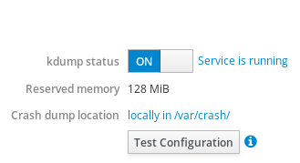
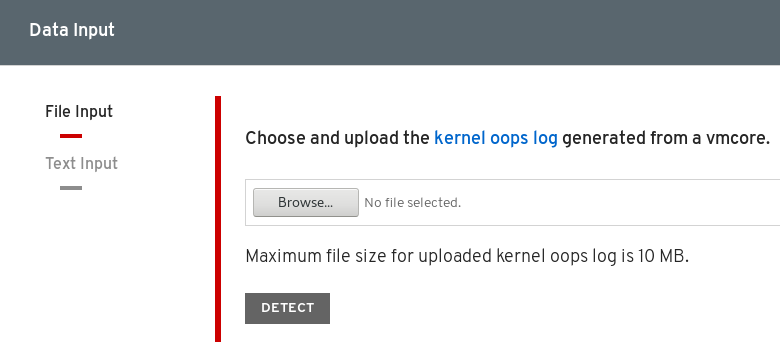

Chapter 9. 安装和配置kdump
kdump是一种提供崩溃转储机制的服务。该服务使您可以保存系统内存的内容以供以后分析。 kdump使用kexec系统调用来引导进入第二个内核（ 捕获内核 ）而无需重启;然后捕获崩溃的内核的内存（ 崩溃转储或vmcore ）并保存它。第二个内核驻留在系统内存的保留部分。
重要
内核崩溃转储可能是系统出现故障时可用的唯一信息（严重错误）。因此，确保kdump运行在任务关键型环境中非常重要。Red Hat建议系统管理员在正常的内核更新周期中定期更新和测试kexec-tools 。在实现新内核功能时，这一点尤为重要。
在许多情况下，默认情况下，在新的Red Hat Enterprise Linux安装上安装并激活kdump服务。Anaconda安装程序在使用图形或文本界面执行交互式安装时为kdump配置提供屏幕。安装程序屏幕标题为Kdump ，可从主Installation Summary屏幕获得，并且仅允许有限配置 - 您只能选择是否启用了kdump以及保留了多少内存。

某些安装选项（如自定义Kickstart安装）在某些情况下默认情况下不会安装或启用kdump 。如果您的系统是这种情况，请按照以下步骤安装kdump 。
先决条件
程序
执行以下命令以检查系统上是否安装了
kdump：$rpm -q kexec-tools如果安装了软件包，则输出：
kexec-tools-2.0.17-11.el8.x86_64如果未安装包，则输出：
package kexec-tools is not installed通过以下方式安装
kdump和其他必要的包：#yum install kexec-tools
重要
从Red Hat Enterprise Linux 7.4（kernel-3.10.0-693.el7）开始， kdump支持Intel IOMMU驱动程序。对于以前的版本，Red Hat Enterprise Linux 7.3（kernel-3.10.0-514 [。XYZ] .el7）及更早版本，建议禁用Intel IOMMU支持，否则kdump内核很可能无响应。
其他资源
- 有关
kdump内存要求的信息，请参阅“kdump的内存要求”一节 。
在系统引导期间始终保留为kdump功能保留的内存。内存量在系统的Grand Unified Bootloader（GRUB）2配置中指定。以下过程描述了如何通过命令行配置为kdump保留的内存。
先决条件
程序
- 使用root权限编辑
/etc/default/grub文件。 将
crashkernel=选项设置为所需的值。例如，要保留128 MB内存，请使用以下命令：
crashkernel=128M
或者，您可以根据已安装的内存总量将保留内存量设置为变量。内存保留到变量的语法是
crashkernel= <range1> : <size1> , <range2> : <size2>。例如：crashkernel=512M-2G:64M,2G-:128M
如果系统内存总量为512 MB或更高且低于2 GB，则上面的示例保留64 MB内存。如果内存总量超过2 GB，则为
kdump保留128 MB。偏移保留的内存。
有些系统需要保留具有一定固定偏移量的内存，因为崩溃内核预留很早，并且它希望保留一些区域以供特殊使用。如果设置了偏移量，则保留的存储器从那里开始。要偏移保留的内存，请使用以下语法：
crashkernel=128M@16M
上面的示例意味着
kdump保留从16 MB（物理地址0x01000000）开始的128 MB内存。如果offset参数设置为0或完全省略，则kdump自动偏移保留的内存。如上所述，当设置可变存储器保留时，也可以使用该语法。在这种情况下，偏移总是最后指定的（例如，crashkernel=512M-2G:64M,2G-:128M@16M）。
使用以下命令更新GRUB2配置文件：
# grub2-mkconfig -o /boot/grub2/grub.cfg
注意
为kdump配置内存的另一种方法是使用grub2-editenv将crashkernel=< SOME_VALUE >参数附加到kernelopts变量， grub2-editenv将更新所有引导条目。或者，您可以使用grubby实用程序更新一个条目的内核命令行参数。
其他资源
crashkernel=选项可以通过多种方式定义。auto值允许根据系统中的总内存量自动配置保留内存，遵循“kdump的内存要求”一节中描述的指导原则。- 有关启动项，详细信息
kernelopts，以及如何与工作grub2-editenv和grubby见第3章， 配置内核命令行参数 。
捕获内核崩溃时，核心转储可以作为文件存储在本地文件系统中，直接写入设备，也可以使用NFS （网络文件系统）或SSH （安全Shell）协议通过网络发送。一次只能设置其中一个选项，默认行为是将vmcore文件存储在本地文件系统的/var/crash/目录中。
先决条件
程序
要以root身份更改要保存核心转储的本地目录，请编辑/etc/kdump.conf配置文件，如下所述。
- 从
#path /var/crash行的开头删除哈希符号（“＃”）。 将值替换为目标目录路径。例如：
path /usr/local/cores
重要
在Red Hat Enterprise Linux 8中，使用
path指令定义为kdump目标的目录必须在启动kdumpsystemd服务时存在 - 否则服务将失败。此行为与早期版本的Red Hat Enterprise Linux不同，如果在启动服务时该目录不存在，则会自动创建该目录。
要以root /etc/kdump.conf将文件写入其他分区，请编辑/etc/kdump.conf配置文件，如下所述。
根据您的选择，从
#ext4行的开头删除哈希符号（“＃”）。- 设备名称（
#ext4 /dev/vg/lv_kdump行） - 文件系统标签（
#ext4 LABEL=/bootline） - UUID（
#ext4 UUID=03138356-5e61-4ab3-b58e-27507ac41937行）
- 设备名称（
将文件系统类型以及设备名称，标签或UUID更改为所需的值。例如：
ext4 UUID=03138356-5e61-4ab3-b58e-27507ac41937
重要
建议使用
LABEL=或UUID=指定存储设备。诸如/dev/sda3类的磁盘设备名称不能保证在重新引导时保持一致。重要
在IBM Z硬件上转储到Direct Access存储设备（DASD）时，必须在
/etc/dasd.conf中正确指定转储设备，/etc/dasd.conf再继续。
要将转储直接写入设备：
- 从
#raw /dev/vg/lv_kdump行的开头删除哈希符号（“＃”）。 将值替换为目标设备名称。例如：
raw /dev/sdb1
要使用NFS协议将转储存储到远程计算机：
- 从
#nfs my.server.com:/export/tmp行的开头删除哈希符号（“＃”）。 将值替换为有效的主机名和目录路径。例如：
nfs penguin.example.com:/export/cores
要使用SSH协议将转储存储到远程计算机：
- 从
#ssh user@my.server.com行的开头删除哈希符号（“＃”）。 - 用有效的用户名和主机名替换该值。
在配置中包含
SSH密钥。- 从
#sshkey /root/.ssh/kdump_id_rsa行的开头删除哈希符号。 将值更改为您尝试转储到的服务器上有效的密钥的位置。例如：
ssh john@penguin.example.com sshkey /root/.ssh/mykey
- 从
其他资源
- 有关按类型排序的当前支持和不支持的目标的完整列表，请参阅“支持的kdump目标”一节 。
- 有关如何配置SSH服务器和设置基于密钥的身份验证的信息，请参阅在Red Hat Enterprise Linux中配置基本系统设置 。
kdump使用指定为core collector的程序来捕获vmcore。目前，唯一完全支持的core collector是makedumpfile实用程序。它有几个可配置的选项，这些选项会影响收集过程。例如，收集数据的范围，或者是否应压缩生成的vmcore。
要启用和配置core collector ，请按照以下步骤操作。
先决条件
程序
- 以
root/etc/kdump.conf编辑/etc/kdump.conf配置文件，并从#core_collector makedumpfile -l --message-level 1 -d 31的开头删除/etc/kdump.conf号（“＃”）。 添加
-c参数。例如：core_collector makedumpfile -c
上面的命令启用转储文件压缩。
添加
-d value参数。例如：core_collector makedumpfile -d 17 -c
上面的命令从转储中删除零和空闲页面。该值表示位掩码，其中每个位与特定类型的存储器页相关联，并确定是否将收集该类型的页。有关各个位的说明，请参阅“支持的kdump过滤级别”一节 。
其他资源
- 有关可用选项的完整列表，请参见
makedumpfile(8)手册页。
默认情况下，当kdump无法在“配置kdump目标”一节中指定的目标位置创建vmcore转储文件时，系统将重新启动，并且转储将在此过程中丢失。要更改此行为，请按照以下步骤操作。
先决条件
程序
- 以
root/etc/kdump.conf，从/etc/kdump.conf配置文件中的/etc/kdump.conf#default shell行的开头删除哈希符号（“＃”）。 使用“支持的默认故障响应”一节中所述的所需操作替换该值。例如：
default poweroff
要在引导时启动kdump服务，请按照以下步骤操作。
先决条件
程序
要启用
kdump服务，请使用以下命令：# systemctlenablekdump.service这为
multi-user.target启用了服务。要在当前会话中启动该服务，请使用以下命令：
# systemctlstartkdump.service要停止
kdump服务，请键入以下命令：# systemctlstopkdump.service要禁用
kdump服务，请执行以下命令：# systemctldisablekdump.service
其他资源
- 有关
systemd和配置服务的更多信息，请参阅在Red Hat Enterprise Linux中配置基本系统设置 。
以下部分概述了如何通过Red Hat Enterprise Linux Web控制台设置和测试kdump配置。Web控制台是Red Hat Enterprise Linux 8的默认安装的一部分，并在启动时启用或禁用kdump服务。此外，Web控制台可以方便地为kdump配置保留内存。或以未压缩或压缩格式选择vmcore保存位置。
先决条件
- 有关更多详细信息，请参阅Red Hat Enterprise Linux Web控制台 。
下面的过程说明如何使用Red Hat Enterprise Linux Web控制台界面中的Kernel Dump选项卡配置为kdump内核保留的内存量。该过程还描述了如何指定vmcore转储文件的目标位置以及如何测试配置。
先决条件
- 操作Web控制台简介。
程序
- 打开
Kernel Dump选项卡并启动kdump服务。 - 通过命令行配置
kdump内存使用情况。 单击“
Crash dump location选项旁边的链接。
从下拉列表中选择“
Local Filesystem选项，并指定要在其中保存转储的目录。
或者，从下拉列表中选择
Remote over SSH选项，以使用SSH协议将vmcore发送到远程计算机。使用远程计算机地址，ssh密钥位置和目标目录填充
Server，ssh key和Directory字段。另一种选择是从下拉列表中选择
Remote over NFS选项并填充Mount字段，以使用NFS协议将vmcore发送到远程计算机。注意
勾选“
Compression复选框以减小vmcore文件的大小。
通过崩溃内核来测试您的配置。
警告
此步骤会中断内核的执行并导致系统崩溃和数据丢失。
其他资源
- 有关
kdump当前支持的目标的完整列表，请参阅支持的kdump目标 。 - 有关如何配置SSH服务器和设置基于密钥的身份验证的信息，请参阅在Red Hat Enterprise Linux中配置基本系统设置 。
为了使kdump能够捕获内核崩溃转储并将其保存以供进一步分析，系统内存的一部分必须永久保留用于捕获内核。保留时，主内核无法使用系统内存的这一部分。
内存要求因某些系统参数而异。其中一个主要因素是系统的硬件架构。要找出确切的机器体系结构（例如Intel 64和AMD64，也称为x86_64）并将其打印到标准输出，请使用以下命令：
$ uname -m下表包含自动为kdump保留内存大小的最低内存要求列表。大小根据系统的体系结构和总可用物理内存而变化。
表5.1。kdump所需的最小预留内存量
| 建筑 | 有效内存 | 最小保留内存 |
|---|---|---|
| AMD64和Intel 64（ | 1 GB到64 GB | 160 MB的RAM。 |
| 64 GB到1 TB | 256 MB的RAM。 | |
| 1 TB甚至更多 | 512 MB的RAM。 | |
| 64位ARM体系结构（ | 2 GB甚至更多 | 512 MB的RAM。 |
| IBM Power Systems（ | 2 GB到4 GB | 384 MB的RAM。 |
| 4 GB到16 GB | 512 MB的RAM。 | |
| 16 GB到64 GB | 1 GB的RAM。 | |
| 64 GB到128 GB | 2 GB的RAM。 | |
| 128 GB甚至更多 | 4 GB的RAM。 | |
| IBM Z（ | 4 GB到64 GB | 160 MB的RAM。 |
| 64 GB到1 TB | 256 MB的RAM。 | |
| 1 TB甚至更多 | 512 MB的RAM。 |
在许多系统上， kdump能够估计所需的内存量并自动保留。默认情况下启用此行为，但仅适用于具有超过一定总可用内存量的系统，这些内存因系统体系结构而异。
重要
基于系统中的总存储量自动配置保留存储器是尽力而为的估计。由于I / O设备等其他因素，实际所需的内存可能会有所不同。使用足够的内存可能会导致调试内核无法在内核崩溃的情况下作为捕获内核启动。要避免此问题，请充分增加崩溃内核内存。
其他资源
- 有关如何在命令行上更改内存设置的信息，请参阅“配置kdump内存使用情况”一节 。
- 有关如何通过Web控制台设置保留内存量的说明，请参阅“在Web控制台中配置kdump内存使用情况和目标位置”一节 。
- 有关各种Red Hat Enterprise Linux技术功能和限制的更多信息，请参阅技术功能和限制表 。
在某些系统上，可以通过在引导加载程序配置文件中使用crashkernel=auto参数或在图形配置实用程序中启用此选项来自动为kdump分配内存。但是，要使此自动预留起作用，系统中需要有一定量的总内存。数量因系统架构而异。
下表列出了自动内存分配的阈值。如果系统的内存少于表中指定的内存，则需要手动保留内存。
表5.2。自动内存预留所需的最小内存量
| 建筑 | 所需内存 |
|---|---|
| AMD64和Intel 64（ | 2 GB |
| IBM Power Systems（ | 2 GB |
| IBM Z（ | 4GB |
其他资源
- 有关如何在命令行上手动更改这些设置的信息，请参阅“配置kdump内存使用情况”一节 。
- 有关如何通过Web控制台手动更改保留内存量的说明，请参阅“在Web控制台中配置kdump内存使用情况和目标位置”一节 。
捕获内核崩溃时，vmcore转储文件可以直接写入设备，作为文件存储在本地文件系统上，也可以通过网络发送。下表包含kdump当前支持或明确不支持的转储目标的完整列表。
表5.3。支持的kdump目标
| 类型 | 支持的目标 | 不受支持的目标 |
|---|---|---|
| 原始设备 | 所有本地连接的原始磁盘和分区。 | |
| 本地文件系统 |
直接连接的磁盘驱动器，硬件RAID逻辑驱动器，LVM设备和 | 此表中未明确列出的任何本地文件系统，包括 |
| 远程目录 | 通过 | 使用 |
| 通过 | 在 | 基于多路径的存储。 |
| 通过 | ||
| 使用 | ||
| 使用 | ||
| 使用无线网络接口访问远程目录。 | ||
其他资源
- 有关如何在命令行上配置目标类型的信息，请参阅“配置kdump目标”一节 。
- 有关如何通过Web控制台配置目标的信息，请参阅“在Web控制台中配置kdump内存使用情况和目标位置”一节 。
为了减小转储文件的大小， kdump使用makedumpfile核心收集器来压缩数据，并可选择省略不需要的信息。下表包含makedumpfile实用程序当前支持的过滤级别的完整列表。
注意
makedumpfile命令支持删除透明的大页面和hugetlbfs页面。考虑这两种类型的大页面用户页面，并使用-8级别删除它们。
其他资源
- 有关如何在命令行上配置核心收集器的说明，请参阅“配置核心收集器”一节 。
默认情况下，当kdump无法创建核心转储时，操作系统将重新启动。但是，您可以将kdump配置为执行不同的操作，以防将核心转储保存到主目标。下表列出了当前支持的所有默认操作。
表5.5。支持的默认操作
| 选项 | 描述 |
|---|---|
|
| 尝试将核心转储保存到根文件系统。此选项在与网络目标结合使用时特别有用：如果网络目标无法访问，则此选项将配置kdump以在本地保存核心转储。之后系统重新启动。 |
|
| 重新启动系统，在此过程中丢失核心转储。 |
|
| 暂停系统，在此过程中丢失核心转储。 |
|
| 关闭系统电源，在此过程中丢失核心转储。 |
|
| 从initramfs中运行shell会话，允许用户手动记录核心转储。 |
其他资源
- 有关如何在命令行上设置默认故障响应的详细信息，请参阅“配置kdump缺省故障响应”一节 。
在规划和构建kdump环境时，有必要知道在生成转储文件之前需要多少空间。
makedumpfile --mem-usage命令提供有关可排除页面的有用报告，可用于确定要分配的转储级别。当系统处于代表性负载时运行此命令，否则makedumpfile --mem-usage返回的值小于生产环境中的预期值。
[root@hostname ~]# makedumpfile --mem-usage /proc/kcore TYPE PAGES EXCLUDABLE DESCRIPTION ---------------------------------------------------------------------- ZERO 501635 yes Pages filled with zero CACHE 51657 yes Cache pages CACHE_PRIVATE 5442 yes Cache pages + private USER 16301 yes User process pages FREE 77738211 yes Free pages KERN_DATA 1333192 no Dumpable kernel data
重要
makedumpfile --mem-usage命令以页面形式报告。这意味着您必须根据内核页面大小计算使用的内存大小。默认情况下，Red Hat Enterprise Linux内核为AMD64和Intel 64体系结构使用4 KB大小的页面，为IBM POWER体系结构使用64 KB大小的页面。
要确定系统崩溃的原因，可以使用崩溃实用程序，它提供与GNU调试器（GDB）非常相似的交互式提示。此实用程序允许您以交互方式分析由kdump ， netdump ， diskdump或xendump以及正在运行的Linux系统创建的核心转储。或者，您可以选择使用Kdump Helper或Kernel Oops Analyzer 。
以下过程介绍了如何安装崩溃分析工具。
程序
启用相关的
baseos和appstream存储库：# subscription-manager repos --enable baseos repository# subscription-manager repos --enable appstream repository安装
crash包：# yum install crash安装
kernel-debuginfo包：# yum install kernel-debuginfo该包对应于正在运行的内核，并提供转储分析所需的数据。
其他资源
- 有关如何使用
subscription-manager实用程序使用存储库的更多信息，请参阅配置基本系统设置 。
以下过程介绍了如何启动崩溃实用程序以分析系统崩溃的原因。
先决条件
- 找出您当前正在运行的内核（例如
4.18.0-5.el8.x86_64）。
程序
要启动
crash实用程序，需要将两个必要参数传递给命令：- debug-info（解压缩的vmlinuz映像），例如
/usr/lib/debug/lib/modules/4.18.0-5.el8.x86_64/vmlinux通过特定的kernel-debuginfo包提供。 实际的vmcore文件，例如
/var/crash/127.0.0.1-2018-10-06-14:05:33/vmcore生成的
crash命令如下所示：# crash /usr/lib/debug/lib/modules/4.18.0-5.el8.x86_64/vmlinux /var/crash/127.0.0.1-2018-10-06-14:05:33/vmcore使用
kdump捕获的相同<kernel>版本。例5.1。运行崩溃实用程序
以下示例显示使用4.18.0-5.el8.x86_64内核分析在2018年10月6日下午14:05创建的核心转储。
... WARNING: kernel relocated [202MB]: patching 90160 gdb minimal_symbol values KERNEL: /usr/lib/debug/lib/modules/4.18.0-5.el8.x86_64/vmlinux DUMPFILE: /var/crash/127.0.0.1-2018-10-06-14:05:33/vmcore [PARTIAL DUMP] CPUS: 2 DATE: Sat Oct 6 14:05:16 2018 UPTIME: 01:03:57 LOAD AVERAGE: 0.00, 0.00, 0.00 TASKS: 586 NODENAME: localhost.localdomain RELEASE: 4.18.0-5.el8.x86_64 VERSION: #1 SMP Wed Aug 29 11:51:55 UTC 2018 MACHINE: x86_64 (2904 Mhz) MEMORY: 2.9 GB PANIC: "sysrq: SysRq : Trigger a crash" PID: 10635 COMMAND: "bash" TASK: ffff8d6c84271800 [THREAD_INFO: ffff8d6c84271800] CPU: 1 STATE: TASK_RUNNING (SYSRQ) crash>
- debug-info（解压缩的vmlinuz映像），例如
要退出交互式提示并终止
crash，请键入exit或q。
注意
crash命令还可以用作调试实时系统的强大工具。但请谨慎使用，以免破坏您的系统。
以下过程描述如何使用崩溃实用程序并显示各种指示符，例如内核消息缓冲区，回溯，进程状态，虚拟内存信息和打开文件。
显示消息缓冲区
要显示内核消息缓冲区，请在交互式提示符下键入
log命令，如下例所示：例5.3。显示内核消息缓冲区
crash> log ... several lines omitted ... EIP: 0060:[<c068124f>] EFLAGS: 00010096 CPU: 2 EIP is at sysrq_handle_crash+0xf/0x20 EAX: 00000063 EBX: 00000063 ECX: c09e1c8c EDX: 00000000 ESI: c0a09ca0 EDI: 00000286 EBP: 00000000 ESP: ef4dbf24 DS: 007b ES: 007b FS: 00d8 GS: 00e0 SS: 0068 Process bash (pid: 5591, ti=ef4da000 task=f196d560 task.ti=ef4da000) Stack: c068146b c0960891 c0968653 00000003 00000000 00000002 efade5c0 c06814d0 <0> fffffffb c068150f b7776000 f2600c40 c0569ec4 ef4dbf9c 00000002 b7776000 <0> efade5c0 00000002 b7776000 c0569e60 c051de50 ef4dbf9c f196d560 ef4dbfb4 Call Trace: [<c068146b>] ? __handle_sysrq+0xfb/0x160 [<c06814d0>] ? write_sysrq_trigger+0x0/0x50 [<c068150f>] ? write_sysrq_trigger+0x3f/0x50 [<c0569ec4>] ? proc_reg_write+0x64/0xa0 [<c0569e60>] ? proc_reg_write+0x0/0xa0 [<c051de50>] ? vfs_write+0xa0/0x190 [<c051e8d1>] ? sys_write+0x41/0x70 [<c0409adc>] ? syscall_call+0x7/0xb Code: a0 c0 01 0f b6 41 03 19 d2 f7 d2 83 e2 03 83 e0 cf c1 e2 04 09 d0 88 41 03 f3 c3 90 c7 05 c8 1b 9e c0 01 00 00 00 0f ae f8 89 f6 <c6> 05 00 00 00 00 01 c3 89 f6 8d bc 27 00 00 00 00 8d 50 d0 83 EIP: [<c068124f>] sysrq_handle_crash+0xf/0x20 SS:ESP 0068:ef4dbf24 CR2: 0000000000000000键入
help log以获取有关命令用法的更多信息。注意
内核消息缓冲区包含有关系统崩溃的最重要信息，因此，它始终首先转储到
vmcore-dmesg.txt文件中。当尝试获取完整的vmcore文件失败时（例如，由于目标位置上缺少空间），这很有用。默认情况下，vmcore-dmesg.txt位于/var/crash/目录中。
要显示内核堆栈跟踪，请使用
bt命令。例5.4。显示内核堆栈跟踪
crash> bt PID: 5591 TASK: f196d560 CPU: 2 COMMAND: "bash" #0 [ef4dbdcc] crash_kexec at c0494922 #1 [ef4dbe20] oops_end at c080e402 #2 [ef4dbe34] no_context at c043089d #3 [ef4dbe58] bad_area at c0430b26 #4 [ef4dbe6c] do_page_fault at c080fb9b #5 [ef4dbee4] error_code (via page_fault) at c080d809 EAX: 00000063 EBX: 00000063 ECX: c09e1c8c EDX: 00000000 EBP: 00000000 DS: 007b ESI: c0a09ca0 ES: 007b EDI: 00000286 GS: 00e0 CS: 0060 EIP: c068124f ERR: ffffffff EFLAGS: 00010096 #6 [ef4dbf18] sysrq_handle_crash at c068124f #7 [ef4dbf24] __handle_sysrq at c0681469 #8 [ef4dbf48] write_sysrq_trigger at c068150a #9 [ef4dbf54] proc_reg_write at c0569ec2 #10 [ef4dbf74] vfs_write at c051de4e #11 [ef4dbf94] sys_write at c051e8cc #12 [ef4dbfb0] system_call at c0409ad5 EAX: ffffffda EBX: 00000001 ECX: b7776000 EDX: 00000002 DS: 007b ESI: 00000002 ES: 007b EDI: b7776000 SS: 007b ESP: bfcb2088 EBP: bfcb20b4 GS: 0033 CS: 0073 EIP: 00edc416 ERR: 00000004 EFLAGS: 00000246键入
bt <pid>以显示特定进程的回溯，或键入help bt以获取有关bt用法的更多信息。
要显示系统中进程的状态，请使用
ps命令。例5.5。显示系统中进程的状态
crash>
psPID PPID CPU TASK ST %MEM VSZ RSS COMM > 0 0 0 c09dc560 RU 0.0 0 0 [swapper] > 0 0 1 f7072030 RU 0.0 0 0 [swapper] 0 0 2 f70a3a90 RU 0.0 0 0 [swapper] > 0 0 3 f70ac560 RU 0.0 0 0 [swapper] 1 0 1 f705ba90 IN 0.0 2828 1424 init ... several lines omitted ... 5566 1 1 f2592560 IN 0.0 12876 784 auditd 5567 1 2 ef427560 IN 0.0 12876 784 auditd 5587 5132 0 f196d030 IN 0.0 11064 3184 sshd > 5591 5587 2 f196d560 RU 0.0 5084 1648 bash使用
ps <pid>显示单个特定进程的状态。有关ps使用的更多信息，请使用help ps 。
要显示基本虚拟内存信息，请在交互式提示符下键入
vm命令。例5.6。显示当前上下文的虚拟内存信息
crash> vm PID: 5591 TASK: f196d560 CPU: 2 COMMAND: "bash" MM PGD RSS TOTAL_VM f19b5900 ef9c6000 1648k 5084k VMA START END FLAGS FILE f1bb0310 242000 260000 8000875 /lib/ld-2.12.so f26af0b8 260000 261000 8100871 /lib/ld-2.12.so efbc275c 261000 262000 8100873 /lib/ld-2.12.so efbc2a18 268000 3ed000 8000075 /lib/libc-2.12.so efbc23d8 3ed000 3ee000 8000070 /lib/libc-2.12.so efbc2888 3ee000 3f0000 8100071 /lib/libc-2.12.so efbc2cd4 3f0000 3f1000 8100073 /lib/libc-2.12.so efbc243c 3f1000 3f4000 100073 efbc28ec 3f6000 3f9000 8000075 /lib/libdl-2.12.so efbc2568 3f9000 3fa000 8100071 /lib/libdl-2.12.so efbc2f2c 3fa000 3fb000 8100073 /lib/libdl-2.12.so f26af888 7e6000 7fc000 8000075 /lib/libtinfo.so.5.7 f26aff2c 7fc000 7ff000 8100073 /lib/libtinfo.so.5.7 efbc211c d83000 d8f000 8000075 /lib/libnss_files-2.12.so efbc2504 d8f000 d90000 8100071 /lib/libnss_files-2.12.so efbc2950 d90000 d91000 8100073 /lib/libnss_files-2.12.so f26afe00 edc000 edd000 4040075 f1bb0a18 8047000 8118000 8001875 /bin/bash f1bb01e4 8118000 811d000 8101873 /bin/bash f1bb0c70 811d000 8122000 100073 f26afae0 9fd9000 9ffa000 100073 ... several lines omitted ...使用
vm <pid>显示有关单个特定进程的信息，或使用help vm获取有关vm用法的更多信息。
要显示有关打开文件的信息，请使用
files命令。例5.7。显示有关当前上下文的打开文件的信息
crash>
filesPID: 5591 TASK: f196d560 CPU: 2 COMMAND: "bash" ROOT: / CWD: /root FD FILE DENTRY INODE TYPE PATH 0 f734f640 eedc2c6c eecd6048 CHR /pts/0 1 efade5c0 eee14090 f00431d4 REG /proc/sysrq-trigger 2 f734f640 eedc2c6c eecd6048 CHR /pts/0 10 f734f640 eedc2c6c eecd6048 CHR /pts/0 255 f734f640 eedc2c6c eecd6048 CHR /pts/0使用
files <pid>显示仅由一个选定进程打开的文件，或使用help files获取有关files用法的更多信息。
内核Oops Analyzer是一种通过将oops消息与知识库中的已知问题进行比较来分析故障转储的工具。
先决条件
- 按照Red Hat Labs中的说明，保护oops消息以提供内核Oops Analyzer。
程序
- 按照Kernel Oops Analyzer链接访问该工具。
单击“ 按钮 oops消息。
- 单击按钮，根据
makedumpfile中的信息与已知解决方案比较oops消息。
其他资源
-
kdump.conf （5） -
/etc/kdump.conf配置文件的手册页，其中包含可用选项的完整文档。 -
zipl.conf （5） -
/etc/zipl.conf配置文件的手册页。 -
zipl （8） - IBM System z的
zipl引导加载程序实用程序的手册页。 -
makedumpfile （8） -
makedumpfile核心收集器的手册页。 - kexec （8） - kexec的手册页。
- crash （8） - 崩溃实用程序的手册页。
-
/usr/share/doc/kexec-tools/kexec-kdump-howto.txt-kdump和kexec安装和使用的概述。 - 有关
kexec和kdump配置的更多信息，请参阅Red Hat知识库文章 。 - 有关受支持的
kdump目标的更多信息，请参阅Red Hat知识库文章 。